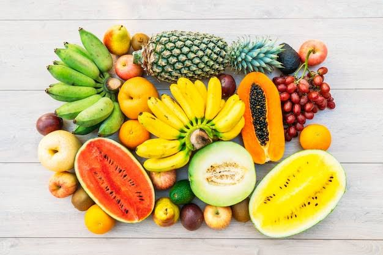

A fruit is the seed-bearing structure that develops from the mature ovary of a flowering plant after fertilization. Its primary biological purpose is to protect the seeds and assist in their dispersal.
